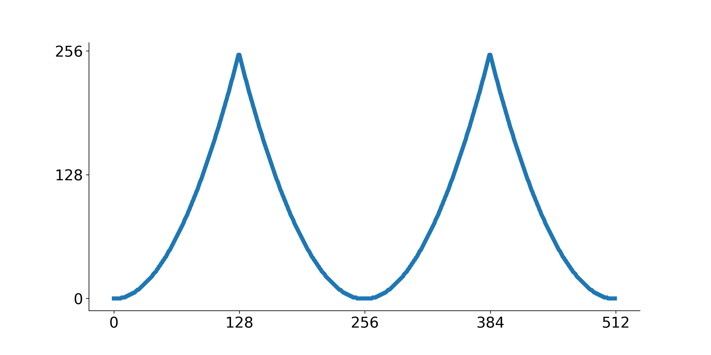

The SpinWheel firmware v0.0.1
This code is at the heart of all of our educational materials. It is what lets you write short programs of just a few lines and still make wonderful and beautiful patterns. If you have only recently started programming this code might look somewhat intimidating, hence consider starting with something simpler before delving in this much deeper pond.
Libraries
First we need to include a number of tools that are already provided by other people and that will simplify our work quite a bit. Such tools are usually called “software libraries”.
The NeoPixel library from Adafruit provides the functions we will use to talk to the large LEDs.
The ICM_20948 library from Sparkfun provides the functions to talk to the motion sensor.
And the math standard library gives us access to frequently used mathematical functions (e.g. trigonometrics and exponents).
Here the implementation of our own new library starts. We will call it SpinWearables, after the name of our volunteer organization.
Constants
We will define a couple of convenient constants that will be used throughout our code.
In many parts of the code we use a byte to represent a position on a circle. One byte can contain any number between 0 and 255. Given that we have 12 small LEDs, we would frequently want to know what one 12th of 255 is, i.e. \(\left\lfloor\frac{255}{12}\right\rfloor=21\), hence we put it here as a easy-to-reuse constant.
The maximum number of animation routines the firmware permits (an arbitrary limit, simply ensuring we do not reserve too much memory). See addAnimationRoutine for details.
A parameter related to how many times we repeat a frame on the small LEDs. This is the main source of delay in our code. See drawSmallLEDFrame.
Parameters for the smoothing filters we use in order to make the readings of the motion sensor less jittery.
Profiling functions
We use this function to measure how fast our code is. When you run it, it tells you how many milliseconds have passes since the previous time it was invoked.
Drawing convenience functions
We have prepared a number of convenience functions to make drawing animations simpler.
Color encoding
Some of our code expects the value of a color to be provided as a 32-bit word of which the bottom 24 bits (3 bytes) contain information about the red, green, and blue components of the color. This function lets us turn 3 bytes, one for each component into a single 32-bit word.
Color wheel
Frequently one needs to access the color (or hue) wheel. It is particularly important when making rainbows for instance. This function takes a coordinate on the circle (a single byte, 0 to 255, where 255 denotes a whole turn), and turns it into the corresponding hue. 
Triangular wave
This function takes a number between 0 and 255 and provides a periodic triangular pattern, particularly useful when one needs a pulsing brightness. 
Parabolic wave
Similarly to the triangular wave, this function is useful for periodically pulsating patterns. However, the profile of this function resembles a beating heart more closely and it can provide for more pleasing visuals. 
Smoothing functions
With these tools various measurements can be made smoother, for more easthetically pleasing look.
Fast-on slow-off filter
Using this function you can very rapidly respond to a new non-zero measurement, but then slowly decay back to zero if the signal ends.
Forward declarations
Occasionally we need to use a function in the definition of another function, before we have had a chance to properly implement the first function. We list these functions here, in what is called a “forward declaration”, in order to tell the computer to reserve space for them.
The main SpinWheel class.
In the following “class” we encapsulate all of the functionality that works directly with the SpinWheel hardware.
The constructor
This is the “constructor” for our SpinWheel object. It ensure that any prerequisite objects are created before we initialize the main object.
The hardware initialization function
The begin function is called when we are ready to start talking to all of the SpinWheel hardware, usually in setup().
Initialize all of the pins we use to drive the grid of small LEDs.
Ensure that the large LEDs, controlled by the Adafruit NeoPixel library are also ready.
Prepare the hardware necessary for talking to the motion sensor.
If instructed, ensure that the button press is set to run a small routine that changes the current animation.
We store the current state of the LEDs in these objects.
We store various motion sensor readings in these variables.
And the list of animations and the currently running animation is stored here.
The functions pushing the current frame to the LEDs.
It does so by running two subroutines, one for each set of LEDs.
The same function can be called with a timeout, ensuring that the hardware repeatedly redraws the image, and does nothing else for the duration of the timeout.
The drawing function responsible for the small LEDs.
This function employs persistence of vision: only a few LEDs flash at the same time, but in a rapid succession we loop through all of them, ensuring that to the human eye all of them seem on. We modulate the intensity of each color by turning it on for different durations.
This loop specifies how many time we cycle through each LED before we exit the functions. We want to do it more times in order to have more vivid colors, but not too many times as to have this function take too long.
And the following two loops go through each row and column of the small LED grid in order to address them efficiently.
On the delays in this inner loop depends how bright the color will be. A longer delay during for a turned-on LED implies a brighter color.
The drawing function for the large LEDs
It simply calls into the Adafruit NeoPixel library.
Talking to the motion sensor
Check that the sensor is ready, and read the current acceleration (A), rotation (G for gyroscope), magnetism (M), and temperature (T) data.
First smooth out the measurements using an exponential averaging filter. Each new value is used to slowly update the filtered value, through the formula \[x_\text{filtered}=\alpha\times x_\text{newest reading} + (1-\alpha)\times x_\text{old value},\] where \(\alpha\) is between 0 and 1. If \(\alpha\) is large we rapidly follow the sensor readings, but if it is small, only a smooth filtered signal is preserved.
taxsmooth = (((int32_t)IMU.agmt.acc.axes.x)*FILTER_A + taxsmooth*FILTER_B)>>FILTER_DIV;
taysmooth = (((int32_t)IMU.agmt.acc.axes.y)*FILTER_A + taysmooth*FILTER_B)>>FILTER_DIV;
tazsmooth = (((int32_t)IMU.agmt.acc.axes.z)*FILTER_A + tazsmooth*FILTER_B)>>FILTER_DIV;
tgxsmooth = (((int32_t)IMU.agmt.gyr.axes.x)*FILTER_A + tgxsmooth*FILTER_B)>>FILTER_DIV;
tgysmooth = (((int32_t)IMU.agmt.gyr.axes.y)*FILTER_A + tgysmooth*FILTER_B)>>FILTER_DIV;
tgzsmooth = (((int32_t)IMU.agmt.gyr.axes.z)*FILTER_A + tgzsmooth*FILTER_B)>>FILTER_DIV;
tmxsmooth = (((int32_t)IMU.agmt.mag.axes.x)*FILTER_A + tmxsmooth*FILTER_B)>>FILTER_DIV;
tmysmooth = (((int32_t)IMU.agmt.mag.axes.y)*FILTER_A + tmysmooth*FILTER_B)>>FILTER_DIV;
tmzsmooth = (((int32_t)IMU.agmt.mag.axes.z)*FILTER_A + tmzsmooth*FILTER_B)>>FILTER_DIV;
ax_int = taxsmooth>>8;
ay_int = taysmooth>>8;
az_int = tazsmooth>>8;
gx_int = tgxsmooth>>8;
gy_int = -tgysmooth>>8;
gz_int = -tgzsmooth>>8;
mx_int = tmxsmooth>>3;
my_int = -tmysmooth>>3;
mz_int = -tmzsmooth>>3;
ax = taxsmooth / 16384.;
ay = taysmooth / 16384.;
az = tazsmooth / 16384.;
gx = tgxsmooth / 16384.;
gy = tgysmooth / 16384.;
gz = tgzsmooth / 16384.;
mx = tmxsmooth / 16384.;
my = tmysmooth / 16384.;
mz = tmzsmooth / 16384.;
}
}Animation routines
void runAnimationRoutine() {
if (registered_animations && current_animation < registered_animations && animationroutines[current_animation]!=0) {
animationroutines[current_animation]();
}
}
void addAnimationRoutine(void (*routine) (void)) {
if (registered_animations<MAXROUTINES) {
animationroutines[registered_animations] = routine;
registered_animations++;
}
}All of the functions used to draw to the upcoming frame
void setBrightness(uint8_t b) {
largeLEDs.setBrightness(b);
}
void setSmallLEDsRainbow(uint8_t angle) {
for (int i=0; i<12; i++) {
setSmallLED(i, colorWheel(angle+i*ONETWELFTH));
}
}
void setSmallLED(int i, uint8_t r, uint8_t g, uint8_t b) {
smallLEDs[i*3] = r;
smallLEDs[i*3+1] = g;
smallLEDs[i*3+2] = b;
}
void setSmallLED(int i, uint32_t rgb) {
smallLEDs[i*3] = rgb>>16;
smallLEDs[i*3+1] = rgb>>8;
smallLEDs[i*3+2] = rgb;
}
void setSmallLEDs(int i, int j, uint8_t r, uint8_t g, uint8_t b) {
for (int ii=max(0,i); ii<min(12,j); ii++) setSmallLED(ii,r,g,b);
}
void setSmallLEDs(int i, int j, uint32_t rgb) {
for (int ii=max(0,i); ii<min(12,j); ii++) setSmallLED(ii,rgb);
}
void setSmallLEDsUniform(uint8_t r, uint8_t g, uint8_t b) {
for (int i=0; i<12; i++) {
smallLEDs[i*3] = r;
smallLEDs[i*3+1] = g;
smallLEDs[i*3+2] = b;
}
}
void setSmallLEDsUniform(uint32_t rgb) {
for (int i=0; i<12; i++) {
smallLEDs[i*3] = rgb>>16;
smallLEDs[i*3+1] = rgb>>8;
smallLEDs[i*3+2] = rgb;
}
}
void setLargeLED(int i, uint8_t r, uint8_t g, uint8_t b) {
largeLEDs.setPixelColor(i,r,g,b);
}
void setLargeLED(int i, uint32_t rgb) {
largeLEDs.setPixelColor(i,rgb);
}
void setLargeLEDsUniform(uint8_t r, uint8_t g, uint8_t b) {
largeLEDs.fill(color(r,g,b), 0, 8);
}
void setLargeLEDsUniform(uint32_t rgb) {
largeLEDs.fill(rgb, 0, 8);
}
void clearSmallLEDs() {
setSmallLEDsUniform(0);
}
void clearLargeLEDs() {
largeLEDs.fill(0, 0, 8);
}
void clearAllLEDs() {
setSmallLEDsUniform(0);
setLargeLEDsUniform(0);
}Some slightly more advanced drawing functions
void setSmallLEDsPointer(uint8_t angle, int64_t decay, uint8_t r, uint8_t g, uint8_t b) {
for (int i=0; i<12; i++) {
uint8_t rel = angle-i*ONETWELFTH;
if (rel>=128) rel = 255-rel;
uint32_t arel = max(255-rel*decay*2l/255,0);
uint8_t tr = r*arel/255;
uint8_t tg = g*arel/255;
uint8_t tb = b*arel/255;
setSmallLED(i,tr,tg,tb);
}
}
void setSmallLEDsPointer(uint8_t angle, int64_t decay, uint32_t rgb) {
setSmallLEDsPointer(angle, decay, rgb>>16, rgb>>8, rgb);
}
void setSmallLEDsProgress(uint8_t angle, uint8_t r, uint8_t g, uint8_t b) {
int i;
for (i=0; i<angle/ONETWELFTH; i++) {
setSmallLED(i, r, g, b);
}
if (i==12) return;
uint32_t br = angle%ONETWELFTH;
setSmallLED(i, br*r/ONETWELFTH, br*g/ONETWELFTH, br*b/ONETWELFTH);
}
void setSmallLEDsProgress(uint8_t angle, uint32_t rgb) {
setSmallLEDsProgress(angle, rgb>>16, rgb>>8, rgb);
}
};
SpinWheelClass SpinWheel;
void cycleAnimationRoutine() { // called from interrupt
static unsigned long last_interrupt_time = 0;
unsigned long interrupt_time = millis();
if (interrupt_time - last_interrupt_time > 200){
SpinWheel.clearAllLEDs();
SpinWheel.current_animation++;
SpinWheel.current_animation %= SpinWheel.registered_animations;
}
last_interrupt_time = interrupt_time;
}Preloaded animations
The SpinWheel comes with a number of preloaded animation routines.
void bootAnimation() {
for (uint8_t i=0; i<252; i+=4) {
SpinWheel.setSmallLEDsUniform(i,i,i);
SpinWheel.drawFrame();
}
for (uint8_t i=252; i>0; i-=4) {
SpinWheel.setSmallLEDsUniform(i,i,i);
SpinWheel.drawFrame();
}
SpinWheel.clearSmallLEDs();
for (uint8_t i=0; i<32; i++) {
SpinWheel.setLargeLEDsUniform(i,i,i);
SpinWheel.drawFrame();
}
for (uint8_t i=32; i>0; i--) {
SpinWheel.setLargeLEDsUniform(i,i,i);
SpinWheel.drawFrame();
}
SpinWheel.clearLargeLEDs();
SpinWheel.drawFrame();
}Rotating
A rotating pattern on the small LEDs.
Breathing
A pulsing pattern on all of the LEDs.
void allBreathing() {
uint8_t t = (millis()>>4)&0xff;
uint8_t b1 = parabolaWave(t);
uint8_t b2 = parabolaWave(t+20);
uint8_t b3 = parabolaWave(t+70);
uint8_t b4 = parabolaWave(t+90);
for (int i=0; i<4; i++) {
SpinWheel.largeLEDs.setPixelColor(i,b1,0,b1);
}
for (int i=4; i<8; i++) {
SpinWheel.largeLEDs.setPixelColor(i,b2,0,b2);
}
for (int i=0; i<12; i++) {
if (i%2==1) {
SpinWheel.setSmallLED(i,b3,0,b3);
} else {
SpinWheel.setSmallLED(i,b4,0,b4);
}
}
}
Tilt sensor 1
The large LEDs are used as a tilt sensor.
void tiltSensor() {
int8_t x = SpinWheel.ax_int;
int8_t y = SpinWheel.ay_int;
SpinWheel.clearLargeLEDs();
if (x>0) SpinWheel.largeLEDs.setPixelColor(7,x,0,x);
else SpinWheel.largeLEDs.setPixelColor(5,-x,0,-x);
if (y>0) SpinWheel.largeLEDs.setPixelColor(4,y,0,y);
else SpinWheel.largeLEDs.setPixelColor(6,-y,0,-y);
}Compass
A compass on the small LEDs, while the large LEDs are used as a tilt sensor.
void compass() {
int8_t x = SpinWheel.ax_int;
int8_t y = SpinWheel.ay_int;
SpinWheel.clearLargeLEDs();
if (x>10) SpinWheel.largeLEDs.setPixelColor(7,x-8,0,0);
else if (x<-10) SpinWheel.largeLEDs.setPixelColor(5,-x+8,0,0);
else {
SpinWheel.largeLEDs.setPixelColor(1,0,0,32-3*abs(x));
SpinWheel.largeLEDs.setPixelColor(3,0,0,32-3*abs(x));
}
if (y>10) SpinWheel.largeLEDs.setPixelColor(4,y-8,0,0);
else if (y<-10) SpinWheel.largeLEDs.setPixelColor(6,-y+8,0,0);
else {
SpinWheel.largeLEDs.setPixelColor(0,0,0,32-3*abs(y));
SpinWheel.largeLEDs.setPixelColor(2,0,0,32-3*abs(y));
}
uint8_t angle = (atan2(SpinWheel.my_int, SpinWheel.mx_int)+3.1415/2)/2/3.1415*255;
SpinWheel.setSmallLEDsPointer(angle, 500, 0xffffff);
}Tilt sensor 2
The small LEDs are used as a tilt sensor.
Tilt sensor 3
Both the large and the small LEDs are used as a tilt sensor.
void tiltSensor3() {
int8_t x = SpinWheel.ax_int;
int8_t y = SpinWheel.ay_int;
SpinWheel.setLargeLEDsUniform(0xffffff);
if (x>10) {
SpinWheel.largeLEDs.setPixelColor(7,x-8,0,x-8);
SpinWheel.largeLEDs.setPixelColor(3,x-8,0,x-8);
}
else if (x<-10) {
SpinWheel.largeLEDs.setPixelColor(5,-x+8,0,-x+8);
SpinWheel.largeLEDs.setPixelColor(1,-x+8,0,-x+8);
}
if (y>10) {
SpinWheel.largeLEDs.setPixelColor(4,y-8,0,y-8);
SpinWheel.largeLEDs.setPixelColor(0,y-8,0,y-8);
}
else if (y<-10) {
SpinWheel.largeLEDs.setPixelColor(6,-y+8,0,-y+8);
SpinWheel.largeLEDs.setPixelColor(2,-y+8,0,-y+8);
}
uint8_t angle = (atan2(SpinWheel.ay_int, SpinWheel.ax_int)+3.1415/2)/2/3.1415*255;
SpinWheel.setSmallLEDsPointer(angle, 500, 0xffffff);
}Flashlight
As the name suggests, this function turns all LEDs on to full brightness.
Teal Light
As the name suggests, this function turns all LEDs on to full brightness.
Large Rainbow
Draw a rainbow on the larger LEDs and while the smaller ones are all white.